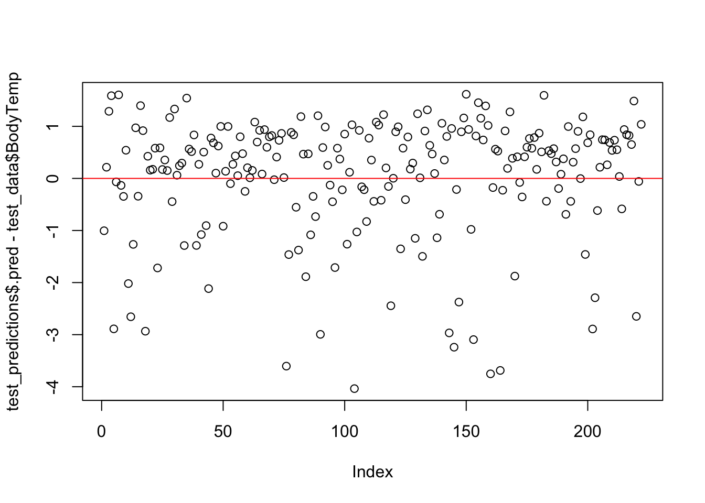

Flu Analysis: Machine Learning Techniques
Nicholas Mallis
11/2/2021
This is part of an analysis exercise I did in a Modern Applied Data Analysis course at UGA with Dr. Andreas Handel. We used data on flu patients You can find the full steps to data cleaning on more information here at the github page
Setting up
#loading packages
library(broom)
library(here) #for data loading/saving
library(tidyverse)
library(recipes)
library(tidymodels)
library(workflowr)
library(parsnip)
library(rsample)
library(rpart)
library(glmnet)
library(ranger)
library(modeldata)
library(rpart.plot)
library(dials)
library(workflows)
library(vip)
library(glmnet)
library(yardstick)
library(doParallel) # for parallel computing #Loading Data
#first loading in processed data
data_location <- here::here("files","processeddata.rds")
#load data.
data <- readRDS(data_location)
#checking
glimpse(data)#Setting up: Random Seed, Data Split, and Cross Validation
set.seed(123)
data_split <- initial_split(data, prop = .7, strata = BodyTemp)
train_data <- training(data_split)
test_data <- testing(data_split)
folds <- vfold_cv(train_data, v = 5, r=5, strata= "BodyTemp")
folds## # 5-fold cross-validation repeated 5 times using stratification
## # A tibble: 25 × 3
## splits id id2
## <list> <chr> <chr>
## 1 <split [405/103]> Repeat1 Fold1
## 2 <split [405/103]> Repeat1 Fold2
## 3 <split [406/102]> Repeat1 Fold3
## 4 <split [408/100]> Repeat1 Fold4
## 5 <split [408/100]> Repeat1 Fold5
## 6 <split [405/103]> Repeat2 Fold1
## 7 <split [405/103]> Repeat2 Fold2
## 8 <split [406/102]> Repeat2 Fold3
## 9 <split [408/100]> Repeat2 Fold4
## 10 <split [408/100]> Repeat2 Fold5
## # … with 15 more rowsCreating a Recipe/Workflow
#Recipe() has two arguments: a formula and the data
bodytemp_cont_rec <- recipe(BodyTemp ~ ., data = train_data) %>%
step_dummy(all_nominal_predictors()) #adding step_dummy
#Build a model specification using the parsnip package
lm_mod <- linear_reg() %>%
set_engine("lm")
#Model workflow pairs a model and recipe together
bodytemp_cont_workflow <-
workflow() %>%
add_model(lm_mod) %>%
add_recipe(bodytemp_cont_rec)#Fitting the Null Model
# Creates a simple recipe that fits null model
bodytmp_rec_null <- recipe(BodyTemp ~ 1 , data = train_data)
# Set a model as we did in the previous exercise
lr_mod <-
linear_reg() %>%
set_engine("lm")
bodytmp_wflow_null <-
workflow() %>%
add_model(lr_mod) %>%
add_recipe(bodytmp_rec_null)
# Fitting the model
bodytmp_fit_null <-
bodytmp_wflow_null %>%
fit(data = train_data)
# Extracting Model/Recipes with Parsnip
bodytmp_fit_null %>%
extract_fit_parsnip() %>%
tidy()## # A tibble: 1 × 5
## term estimate std.error statistic p.value
## <chr> <dbl> <dbl> <dbl> <dbl>
## 1 (Intercept) 98.9 0.0537 1842. 0## # A tibble: 508 × 1
## .pred
## <dbl>
## 1 98.9
## 2 98.9
## 3 98.9
## 4 98.9
## 5 98.9
## 6 98.9
## 7 98.9
## 8 98.9
## 9 98.9
## 10 98.9
## # … with 498 more rows## # A tibble: 508 × 1
## BodyTemp
## <dbl>
## 1 97.8
## 2 98.1
## 3 98.1
## 4 98.2
## 5 97.8
## 6 98.2
## 7 98.1
## 8 98
## 9 97.7
## 10 98.2
## # … with 498 more rows# Calculating Root RMSE
rmse_train <- bodytmp_aug_null %>%
rmse(truth = BodyTemp, .pred)
# RMSE 1.21
rmse_train## # A tibble: 1 × 3
## .metric .estimator .estimate
## <chr> <chr> <dbl>
## 1 rmse standard 1.21## # A tibble: 222 × 1
## .pred
## <dbl>
## 1 98.9
## 2 98.9
## 3 98.9
## 4 98.9
## 5 98.9
## 6 98.9
## 7 98.9
## 8 98.9
## 9 98.9
## 10 98.9
## # … with 212 more rows## # A tibble: 222 × 1
## BodyTemp
## <dbl>
## 1 100.
## 2 98.8
## 3 98.2
## 4 97.9
## 5 102.
## 6 99.3
## 7 97.8
## 8 99.5
## 9 99.7
## 10 98.8
## # … with 212 more rows# Calculating Root RMSE
rmse_test <- bodytmp_aug_null %>%
rmse(truth = BodyTemp, .pred)
# RMSE 1.16
rmse_test ## # A tibble: 1 × 3
## .metric .estimator .estimate
## <chr> <chr> <dbl>
## 1 rmse standard 1.16###Here we see that the RMSE on train data from the null model is 1.21
## # A tibble: 1 × 3
## .metric .estimator .estimate
## <chr> <chr> <dbl>
## 1 rmse standard 1.21#Fitting a Tree
# TREE
# model specification
tune_spec <-
decision_tree(
cost_complexity = tune(),
tree_depth = tune()
) %>%
set_engine("rpart") %>%
set_mode("regression") # setting it to regression instead of classification
tune_spec## Decision Tree Model Specification (regression)
##
## Main Arguments:
## cost_complexity = tune()
## tree_depth = tune()
##
## Computational engine: rpart# tuning grid specification
tree_grid <- grid_regular(cost_complexity(),
tree_depth(),
levels = 5)
tree_grid %>%
count(tree_depth)## # A tibble: 5 × 2
## tree_depth n
## <int> <int>
## 1 1 5
## 2 4 5
## 3 8 5
## 4 11 5
## 5 15 5# Tune a workflow() that bundles together a model
# specification and a recipe or model preprocessor.
# Here we use a workflow() with a straightforward formula;
# if this model required more involved data preprocessing,
# we could use add_recipe() instead of add_formula().
tree_wf <- workflow() %>%
add_model(tune_spec) %>%
add_recipe(bodytemp_cont_rec) # using predefined recipe# tuning using cross-validation and the tune_grid() function
tree_res <-
tree_wf %>%
tune_grid(resamples = folds, grid = tree_grid)## ! Fold1, Repeat1: internal: A correlation computation is required, but `estimate` is const...## ! Fold2, Repeat1: internal: A correlation computation is required, but `estimate` is const...## ! Fold3, Repeat1: internal: A correlation computation is required, but `estimate` is const...## ! Fold4, Repeat1: internal: A correlation computation is required, but `estimate` is const...## ! Fold5, Repeat1: internal: A correlation computation is required, but `estimate` is const...## ! Fold1, Repeat2: internal: A correlation computation is required, but `estimate` is const...## ! Fold2, Repeat2: internal: A correlation computation is required, but `estimate` is const...## ! Fold3, Repeat2: internal: A correlation computation is required, but `estimate` is const...## ! Fold4, Repeat2: internal: A correlation computation is required, but `estimate` is const...## ! Fold5, Repeat2: internal: A correlation computation is required, but `estimate` is const...## ! Fold1, Repeat3: internal: A correlation computation is required, but `estimate` is const...## ! Fold2, Repeat3: internal: A correlation computation is required, but `estimate` is const...## ! Fold3, Repeat3: internal: A correlation computation is required, but `estimate` is const...## ! Fold4, Repeat3: internal: A correlation computation is required, but `estimate` is const...## ! Fold5, Repeat3: internal: A correlation computation is required, but `estimate` is const...## ! Fold1, Repeat4: internal: A correlation computation is required, but `estimate` is const...## ! Fold2, Repeat4: internal: A correlation computation is required, but `estimate` is const...## ! Fold3, Repeat4: internal: A correlation computation is required, but `estimate` is const...## ! Fold4, Repeat4: internal: A correlation computation is required, but `estimate` is const...## ! Fold5, Repeat4: internal: A correlation computation is required, but `estimate` is const...## ! Fold1, Repeat5: internal: A correlation computation is required, but `estimate` is const...## ! Fold2, Repeat5: internal: A correlation computation is required, but `estimate` is const...## ! Fold3, Repeat5: internal: A correlation computation is required, but `estimate` is const...## ! Fold4, Repeat5: internal: A correlation computation is required, but `estimate` is const...## ! Fold5, Repeat5: internal: A correlation computation is required, but `estimate` is const...## # A tibble: 50 × 8
## cost_complexity tree_depth .metric .estimator mean n std_err .config
## <dbl> <int> <chr> <chr> <dbl> <int> <dbl> <chr>
## 1 0.0000000001 1 rmse standard 1.19 25 0.0181 Prepro…
## 2 0.0000000001 1 rsq standard 0.0361 25 0.00422 Prepro…
## 3 0.0000000178 1 rmse standard 1.19 25 0.0181 Prepro…
## 4 0.0000000178 1 rsq standard 0.0361 25 0.00422 Prepro…
## 5 0.00000316 1 rmse standard 1.19 25 0.0181 Prepro…
## 6 0.00000316 1 rsq standard 0.0361 25 0.00422 Prepro…
## 7 0.000562 1 rmse standard 1.19 25 0.0181 Prepro…
## 8 0.000562 1 rsq standard 0.0361 25 0.00422 Prepro…
## 9 0.1 1 rmse standard 1.21 25 0.0177 Prepro…
## 10 0.1 1 rsq standard NaN 0 NA Prepro…
## # … with 40 more rows# Once you have done the tuning, you can take a look at some diagnostics
#by sending your object returned from the tune_grid() function to autoplot().
#For instance if you tuned the tree and saved the result as tree_tune_res,
#you can run tree_tune_res %>% autoplot(). Depending on the model, the plot
#will be different, but in general it shows you what happened during the tuning process.
#plotting metrics
tree_res %>% autoplot()# Next, you want to get the model that the tuning process has determined
# is the best. You can get the best-fit model with select_best()
# and finalize_workflow() and then do one more fit to the training data with
# this final workflow using the fit() function. Follow the examples in the tutorial.
# selecting best
best_tree <- tree_res %>%
select_best(tree_res, metric = "rsq")
best_tree## # A tibble: 1 × 3
## cost_complexity tree_depth .config
## <dbl> <int> <chr>
## 1 0.0000000001 4 Preprocessor1_Model06## ══ Workflow ════════════════════════════════════════════════════════════════════
## Preprocessor: Recipe
## Model: decision_tree()
##
## ── Preprocessor ────────────────────────────────────────────────────────────────
## 1 Recipe Step
##
## • step_dummy()
##
## ── Model ───────────────────────────────────────────────────────────────────────
## Decision Tree Model Specification (regression)
##
## Main Arguments:
## cost_complexity = 1e-10
## tree_depth = 4
##
## Computational engine: rpart# one more fit to the training data with
# this final workflow using the fit() function
final_fit <-
final_wf %>%
last_fit(data_split)
# RMSE= 1.23, not much different from the null
final_fit %>%
collect_metrics()## # A tibble: 2 × 4
## .metric .estimator .estimate .config
## <chr> <chr> <dbl> <chr>
## 1 rmse standard 1.23 Preprocessor1_Model1
## 2 rsq standard 0.00645 Preprocessor1_Model1# Make two plots, one that shows model predictions from the tuned model
# versus actual outcomes
ggplot(data=tree_pred, aes(x=.pred, y=BodyTemp)) + geom_point() + labs(title= "Plot of Model Predictions from Tuned Model vs Actual Outcomes",
x= "Model Predictions", y= "Actual Outcomes") 
#calculating residuals
tree_pred$resid <- tree_pred$BodyTemp - tree_pred$.pred
# one that plots residuals.
# plotting residuals
ggplot(data=tree_pred, aes(x=.pred , y=resid)) + geom_point() +
labs(title= "Plot of Model Predictions from Tuned Model vs Actual Outcomes",
x= "Model Predictions", y= "Residuals") # Look at/print the model performance and compare it with the null model
# (still only on training data). Here, we want the performance of the tuned,
# best-fitting model on the CV dataset (we are not yet touching the test data).
# You can get that for instance with the show_best() function, which gives you
# the mean cross-validated performance for the best models. It also shows the
# standard deviation for the performance. Compare that model performance with the null model###Comparing RMSE to Null
The tree model does not perform very well, and the model only predicts a few discrete outcome values. That’s also noticeable when we compare RMSE for the tree model(1.23) and the null model (1.21). They are very similar.
## # A tibble: 1 × 7
## .workflow .metric .estimator mean n std_err .config
## <list> <chr> <chr> <dbl> <int> <dbl> <chr>
## 1 <workflow> rmse standard 1.23 1 NA Preprocessor1_Model1## # A tibble: 1 × 3
## .metric .estimator .estimate
## <chr> <chr> <dbl>
## 1 rmse standard 1.21###Tree Plot

Estimate variable importance based on the model’s structure.
LASSO linear model
Repeating the steps above, now for LASSO.
LASSO setup
LASSO tuning
#parallel computing
#ncores = 18 #adjust based on your computer
#cl <- makePSOCKcluster(ncores)
#registerDoParallel(cl)
#tuning grid
lasso_reg_grid <- tibble(penalty = 10^seq(-3, 0, length.out = 30))
#tune model
lasso_tune_res <- lasso_wf %>%
tune_grid(resamples = folds,
grid = lasso_reg_grid,
control = control_grid(save_pred = TRUE),
metrics = metric_set(rmse)
)
# turn off parallel clusterLASSO evaluation
# get the tuned model that performs best
best_lasso <- lasso_tune_res %>% select_best(metric = "rmse")
# finalize workflow with best model
best_lasso_wf <- lasso_wf %>% finalize_workflow(best_lasso)
# fitting best performing model
best_lasso_fit <- best_lasso_wf %>%
fit(data = train_data)
lasso_pred <- predict(best_lasso_fit, train_data)Plotting LASSO variables as function of tuning parameter
The higher the regularization, the fewer predictor variables that remain in the model. (Once a coefficient is at 0, the corresponding variable is not in the model anymore).
Below are the variables that are part of the best-fit LASSO.
## # A tibble: 13 × 3
## term estimate penalty
## <chr> <dbl> <dbl>
## 1 (Intercept) 98.7 0.0574
## 2 ChestCongestion_Yes 0.0332 0.0574
## 3 ChillsSweats_Yes 0.0894 0.0574
## 4 NasalCongestion_Yes -0.140 0.0574
## 5 Sneeze_Yes -0.391 0.0574
## 6 Fatigue_Yes 0.178 0.0574
## 7 SubjectiveFever_Yes 0.377 0.0574
## 8 Weakness_1 0.178 0.0574
## 9 Myalgia_2 -0.00994 0.0574
## 10 Myalgia_3 0.0679 0.0574
## 11 RunnyNose_Yes -0.0825 0.0574
## 12 Nausea_Yes 0.00349 0.0574
## 13 Pharyngitis_Yes 0.148 0.0574Plotting observed/predicted and residuals.
#predicted versus observed
plot(lasso_pred$.pred,train_data$BodyTemp, xlim =c(97,103), ylim=c(97,103))
abline(a=0,b=1, col = 'red') #45 degree line, along which the results should fall#residuals
plot(lasso_pred$.pred-train_data$BodyTemp)
abline(a=0,b=0, col = 'red') #straight line, along which the results should fallThe diagnostic plots show that this model isn’t much better either. We want the points to be along the red lines in each plot. They are not.
Looking at model performance.
## # A tibble: 1 × 7
## penalty .metric .estimator mean n std_err .config
## <dbl> <chr> <chr> <dbl> <int> <dbl> <chr>
## 1 0.0574 rmse standard 1.15 25 0.0169 Preprocessor1_Model18The mean RMSE was 1.15, which is still not great.
Random forest model
Repeating the steps above, now for a random forest.
Random forest setup
rf_model <- rand_forest() %>%
set_args(mtry = tune(),
trees = tune(),
min_n = tune()
) %>%
# select the engine/package that underlies the model
set_engine("ranger",
num.threads = 18, #for some reason for RF, we need to set this in the engine too
importance = "permutation") %>%
# choose either the continuous regression or binary classification mode
set_mode("regression") Random forest tuning
#parallel computing
#tuning grid
rf_grid <- expand.grid(mtry = c(3, 4, 5, 6), min_n = c(40,50,60), trees = c(500,1000) )
# tune the model, optimizing RMSE
rf_tune_res <- rf_wf %>%
tune_grid(
resamples = folds, #CV object
grid = rf_grid, # grid of values to try
metrics = metric_set(rmse)
)
# turn off parallel clusterRandom forest evaluation
# get the tuned model that performs best
best_rf <- rf_tune_res %>% select_best(metric = "rmse")
# finalize workflow with best model
best_rf_wf <- rf_wf %>% finalize_workflow(best_rf)
# fitting best performing model
best_rf_fit <- best_rf_wf %>%
fit(data = train_data)
rf_pred <- predict(best_rf_fit, train_data)Looking at important predictors
#pull out the fit object
x <- best_rf_fit$fit$fit$fit
#plot variable importance
vip::vip(x, num_features = 20)Sneeze and Subject fever look like the most important.
Plotting observed/predicted and residuals.
#predicted versus observed
plot(rf_pred$.pred,train_data$BodyTemp, xlim =c(97,103), ylim=c(97,103))
abline(a=0,b=1, col = 'red') #45 degree line, along which the results should fall#residuals
plot(rf_pred$.pred-train_data$BodyTemp)
abline(a=0,b=0, col = 'red') #straight line, along which the results should fallLooking at model performance.
## # A tibble: 1 × 9
## mtry trees min_n .metric .estimator mean n std_err .config
## <dbl> <dbl> <dbl> <chr> <chr> <dbl> <int> <dbl> <chr>
## 1 6 1000 60 rmse standard 1.16 25 0.0167 Preprocessor1_Model24Based on the diagnostic plots and the model performance, it seems that RF isn’t much better.
Picking a Model
None of these models are peforming that well, but for the sake of the exercise, we go with the LASSO.
Final Model Evaluation
We’ll now apply the model a single time to the test data.
# for reasons that make no sense (likely a bug in tidymodels)
# I need to re-start a parallel cluster here to get the command below to work
# fit on the training set and evaluate on test set
final_fit <- best_lasso_wf %>% last_fit(data_split)Let’s look at the performance of the final fit, evaluated on the test data.
## # A tibble: 2 × 4
## .metric .estimator .estimate .config
## <chr> <chr> <dbl> <chr>
## 1 rmse standard 1.15 Preprocessor1_Model1
## 2 rsq standard 0.0291 Preprocessor1_Model1Looking at RMSE on test and train, we that they are similar, suggesting that we avoided overfitting.
If we compare the RMSE on the test data to the performance/RMSE of the null model on the test data, we see it’s not much better, showing that none of these models are good.
Diagnostic plots for test data.
Plotting observed/predicted and residuals.
#predicted versus observed
plot(test_predictions$.pred,test_data$BodyTemp, xlim =c(97,103), ylim=c(97,103))
abline(a=0,b=1, col = 'red') #45 degree line, along which the results should fall#residuals
plot(test_predictions$.pred-test_data$BodyTemp)
abline(a=0,b=0, col = 'red') #straight line, along which the results should fall